Tokyo
Tokyo, la capitale du Japon, est une métropole fascinante qui allie tradition et modernité. Découvrez ses quartiers emblématiques, sa cuisine délicieuse et ses nombreuses attractions.
1. Tokyo Tower
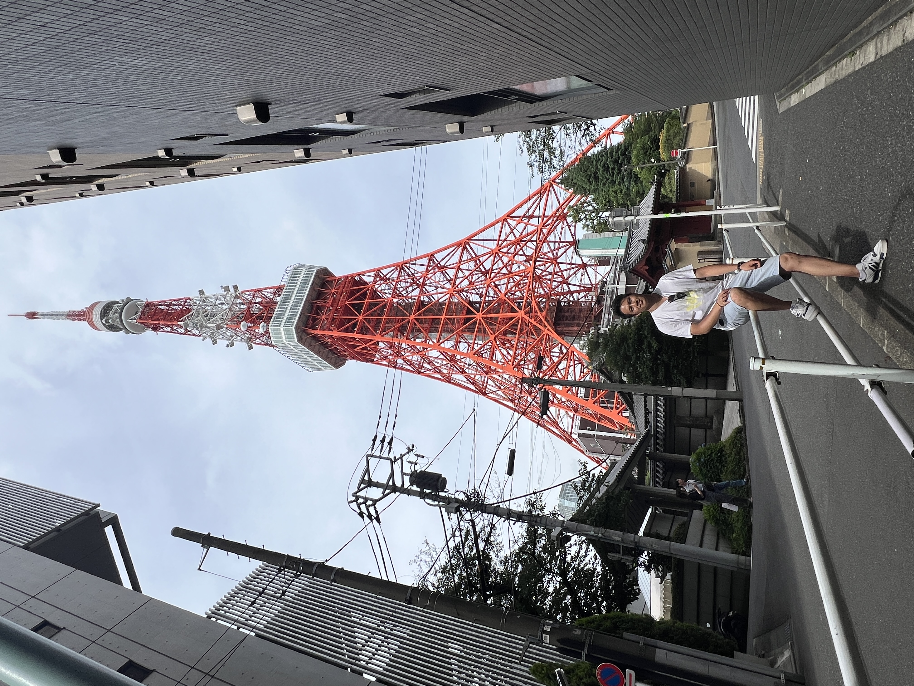Bien évidemment, il faut une Tour Eiffel japonaise, basé sur le même concept que notre cher Tour Eiffel, c’est l’une des structures en métal les plus grandes au monde et mesure 332,6 mètres de haut, donc quasiment la même taille que notre tour française ! J’ai eu l’occasion de le voir de l’extérieur et je suis parti très rapidement voir à l’intérieur mais je ne suis pas monté par manque de temps et aussi à cause du prix qui n’est pas donné… Je vous mets les tarifs juste à côté.
Si vous allez à Tokyo je pense que c’est une chose à absolument visiter ! Aux couleurs d’une grue (lol), c’est une tour emblématique et les spots pour prendre des photos de cette belle tour en valent le détour ! De plus, apparemment la tour en pleine nuit est absolument magnifique !
Adresse : 4-chōme-2-8 Shibakōen, Minato City, Tokyo 105-0011, Japon
2. Tokyo Skytree
A ne pas confondre avec la Tokyo Tower (architecture traditionnelle) … Il est 2 fois plus grand (634m) que la tour Eiffel (330m). Comparé à la Tokyo Tower, la Tokyo Skytree est ultramoderne ! … C’est ce que internet dit. Cependant je trouve qu’il est moins impressionnant que la Tokyo tower surtout vu de l’extérieur car en réalité il est bâti sur un bâtiment et de ce fait je trouve qu’elle a moins de charme. Néanmoins, la vue est peut-être plus impressionnante si vous montez sur cette tour, chose que je n’ai pas fait au vu du temps et du prix qui diffère en fonction de la hauteur où vous voulez y aller, je vous mets ci-dessous les tarifs de la Tokyo Skytree.
Adresse : 1-chōme-1-2 Oshiage, Sumida City, Tokyo 131-0045, Japon
3 TeamLab Planets

C’est sans aucun doute le musée d’art le pluuuuus connu de Tokyo ! La particularité de ce musée est qu’on le visite à pieds nus… Oui oui, à pieds nus ! En effet, il y a des zones où l’on marche dans l’eau il est donc conseillé de porter des shorts ou des pantalons qui peuvent se remonter facilement, musée déconseille cependant aux filles de porter des collants car pas pratique (logique mais faut y penser). Sachez qu’il y a des vestiaires avec casiers pour se changer et ranger ses affaires qui sont mis à disposition. Enfin, n'oubliez surtout pas de réserver avant d’y aller ! Prévoyez au moins 1 heure pour la visite, on l’a fait en 1h30 environ de notre côté. Le prix est de 3800 yens soit environ 23€ l’entrée pour une personne. Quand vous réservez le billet, la veille de la visite vous recevrez un QR code par mail pour pouvoir entrer au musée, donc ne l’oubliez pas de l’enregistrer !
Le guide que j’ai reçu après ma réservation : https://teamlabplanets.dmm.com/en/guide#access

4 Teamlab Borderless
XX. Teamlab Borderless
Il n'y a que des vidéos ou photos sur le Teamlab Planets mais je trouve que le Teamlab Borderless est trop sous-côté alors qu'ils se situent tous les deux à Tokyo. Je vous présente donc le Teamlab Borderless, ses différences et avantages par rapport au Teamlab Planets.
Tout d'abord, les deux Teamlab possèdent la même salle avec les fils de lumière MAIS il y a nettement moins de monde que le Teamlab Planets.
De plus, il possède plus de salles que le Teamlab Planets :
- Universe of Water Particles : chute d’eau numérique qui réagit aux visiteurs
- Bubble Universe / Microcosmoses : sphères de lumière interactives, reflet infini
- Sketch Ocean : dessins scannés prennent vie en aquarium numérique
- Infinite Crystal World : installation miroir + LED créant un effet ciel étoilé
- Dark Crystal Formation : sculptures lumineuses réagissant à la présence humaine, cycle vie/mort
- Future Park : activités pour enfants, toboggans, trampolines, dessins évolutifs
- EN TEA HOUSE : cérémonie du thé interactive où des fleurs numériques éclosent directement dans ta tasse
En revanche, un point négatif ou positif selon la vision de chacun c'est qu'en fait le Teamlab Borderless c'est un peu comme un labyrinthe. Il fait vraiment sombre là-bas et c'est à vous de trouver les salles cachées. Ma sœur et moi on a eu un peu le seum d'avoir oublié l’une des salles les plus connues et belles de ce Teamlab : le Bubble Universe alors que nos parents l'ont trouvé...
De plus, je trouve que le Borderless est plus interactif que le Teamlab Planets où ce sont juste des lieux instagrammables, tu prends ta photo et puis tu t'en vas.
Par exemple, une activité que j'ai grave adorée faire c'était le Sketch Ocean, où tu colories un animal marin que t'auras choisi à l'avance puis on scanne ton dessin qui prendra vie dans leur aquarium numérique !
Ensuite, une autre activité sympa à faire mais cette fois-ci il y a vraiment beaucoup de queue c'est le En Tea House, c'est une cérémonie du thé interactive où des fleurs numériques éclosent directement dans ta tasse !
J'ai essayé de comprendre comment les projecteurs arrivent à capter où se situe l'assiette sur la table mais je ne sais toujours pas... donc ça reste un mystère (vous me direz comment ça fonctionne)...
Attention ! pour avoir accès à cette salle il faut payer les consommations en plus du billet d'entrée qui oscille entre 3800 yens et 5400 yens pour un adulte en fonction de la période...
En définitive, le Teamlab Borderless est aussi bien que le Teamlab Planets mais il reste toujours sous-coté, c'est pour ça que je vous conseille d'en profiter tant qu'il y a encore "peu de monde" qui va ici à la place du Planets.
Vraiment le seul truc qui est un peu dommage je trouve, c'est le fait que c'est un peu un labyrinthe et donc qu'on peut louper de superbes salles.
Je vous conseille de réserver le Teamlab Borderless quelques semaines voire quelques mois en avance sur leur site pour la billetterie !
Billetterie : https://www.teamlab.art/fr/e/tokyo/
Adresse : Japon, 〒106-0041 Tokyo, Minato City, Toranomon, 5 Chome−９ Azabudai Hills Garden Plaza B, B1
5 Parco Center
C’est l’un des moments où les plus grands fans de Nintendo, de manga/animes, de pokémon, etc vont adorer (et à la fois beaucoup dépenser). Parco Center est un centre commercial situé à Shibuya, il y a une boutique Nintendo store, Pokemon Center, Jump store et Capcom principalement qui sont situé au même étage. C’est avant tout un centre commercial, je vous laisserai le découvrir et visiter par vous-même !

Adresse : Japon, 〒150-8377 Tokyo, Shibuya, Udagawachō, 15−1 渋谷パルコ・ヒューリックビル B1-10階
6 Kimono tea ceremony Maikoya Tokyo
Qui dit Japon, dit cérémonie du thé, si vous voulez faire du matcha, je répète, du VRAI matcha en tenue de kimono, c’est ici qu’il faut y aller ! Vous apprendrez les mœurs d’une cérémonie du thé, comment faire le matcha ou la posture à avoir pendant une séance d’environ 1h30. Vous aurez également des spots sympas pour faire des shootings photo en kimono à la fin de la cérémonie ! Je recommande vivement de maîtriser l’anglais à minimum pour comprendre le déroulement de la séance. En effet, toutes les explications se font en anglais, et pour une fois, les dames (déjà plutôt âgées) parlent mieux anglais que plus de la majorité de la population japonaise !
 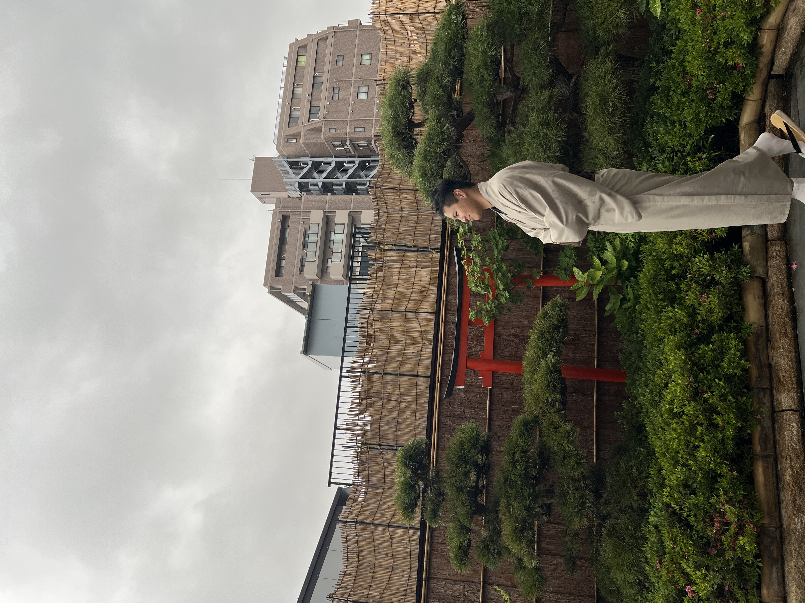
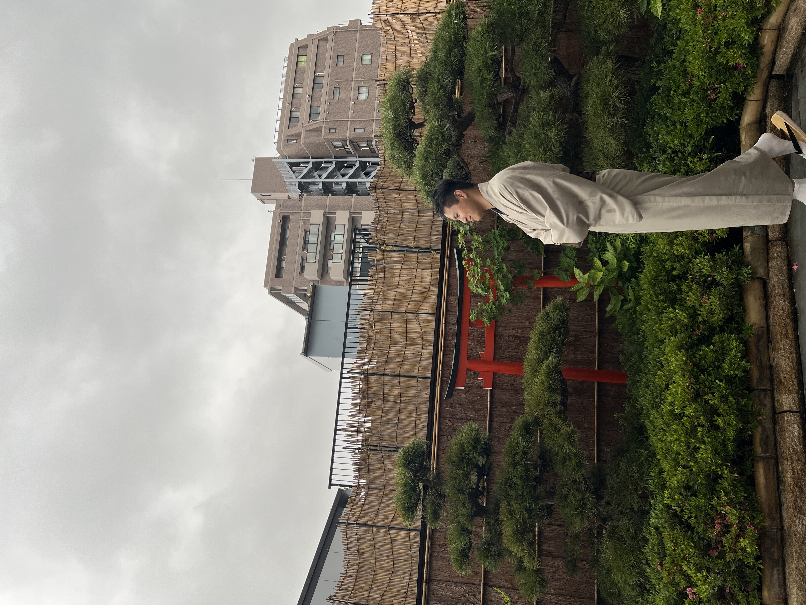
Site pour réserver une session pour la cérémonie : https://mai-ko.com/culture/tea-ceremony/tokyo.html
Adresse : 1 Chome-12-2 Asakusa, Taito City, Tokyo 111-0032, Japon
7. Sushi zanmai
Un petit restaurant de sushi situé à Shibuya, il y a plein de variété de sushis que vous n’avez probablement jamais vu en France. On voit que les bout de poisson sont plus généreux que la quantité de riz où en France c’est tout le contraire avec le chef qui vous met plus de riz que de poisson afin de bien vous faire remplir le ventre… Cependant, il est à noter que c’est bien sûr moins cher qu’en France mais cela reste quand même un plat japonais coûteux parmi les autres spécialités japonaises !
Moi-même je ne sais pas comment j’ai pu prendre une telle photo lol
Adresse: 4 Chome-11-9 Tsukiji, Chuo City, Tokyo 104-0045, Japon
8. Statue Hachiko

C’est la statue du chien abandonné devant la gare de Shibuya. Besoin d’en dire plus ? Ah peut être oui finalement, il y a de la queue de malade pour faire la photo…
9. Akihabara Maids café
D’après le conseil d’une amie japonaise, c’est un incontournable à tester au Japon juste pour l’expérience et… Je le confirme après en avoir testé un…
À Akihabara vous pourrez en trouver plusieurs car vous verrez des jeunes filles habillées en maid dans les rues en train de faire venir des clients dans leur café car la concurrence est rude…
J’ai testé le Maidreamin Akihabara Live Restaurant Heaven's Gate, qui a plus de 10k avis sur Google !
Les photos et vidéos sont interdites dans les maids cafés, cependant il est possible d’obtenir des photos de vous avec la maid en choisissant certains menus qui sont, on ne va pas se mentir, assez coûteux. Donc j’ai bien sûr pris ces menus ! Je suis avant tout venu au Japon pour vivre l’immersion à fond ! (et pas spécialement pour les maids…)
Diverses activités sont au rendez-vous : danse d’une maid sur scène avec trois chansons (il y avait l’opening 1 d’Oshi no ko omg) donc environ 10 min de danse avec la possibilité d’acheter un stick fluorescent pour l’encourager (j’ai acheté…), il y a également une tombola avec divers prix dont le premier était une photo de vous avec TOUTES LES MAIDS du café (J’AI ACHETÉ MAIS J’AI PAS EU ÇA) et il y a aussi le fameux moment où la maid et vous devez lancer un sort sur votre repas en disant « moe moe kyuuuuuuuuu » et en faisant un cœur de la main (c’est bon ? vous avez la voix dans la tête maintenant ? J’en suis profondément désolé…).
Pour la photo avec la maid (si vous avez pris le menu pour), elle vous propose soit de prendre un seul selfie avec votre téléphone ou de prendre avec un Instax/Polaroid pour avoir la photo en physique. Alors attention, c’est le choix de votre vie, choisissez le bon pokem… Une strat ? Si j’ai une strat ? Bwahahahaha, prenez-le avec votre téléphone et si vous avez l’option Live sur votre iPhone d’activée vous pourrez sélectionner la meilleure prise et vous pourrez également imprimer la photo plus tard en physique grâce à des Instax/Polaroids faits pour !
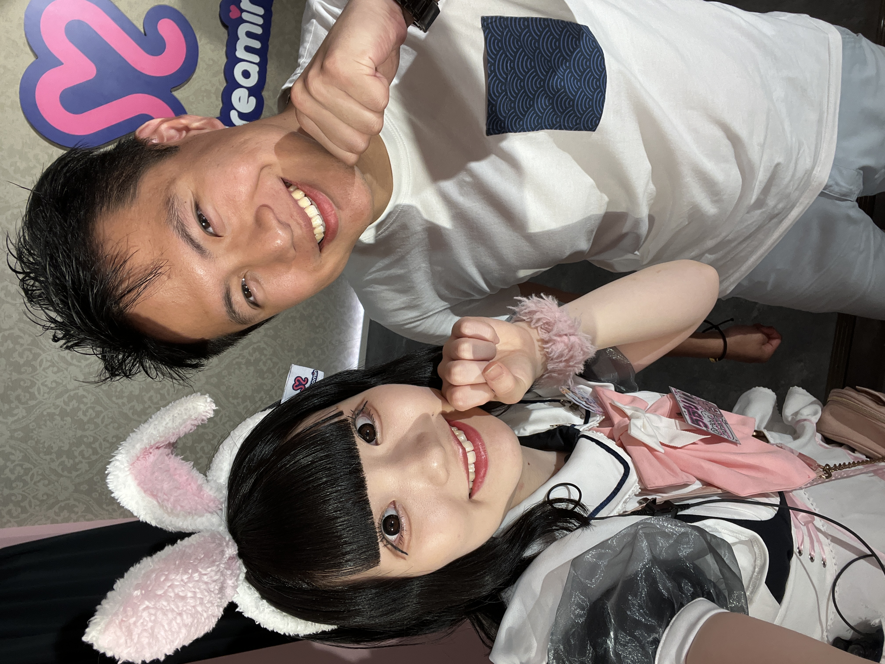Vous ne l’aurez pas en plus grande photo…
En bref, c’est une expérience à ne pas rater entre amis, vous allez taper les meilleures barres de votre vie, alors foncez !
Quoi ? Ah… le prix… j’ai payé 4080 yens pour toutes ces activités avec le plat et boisson compris, ce qui fait environ 25.5€, ça va roh, on n’a qu’une vie…
J’ai demandé à la maid de dessiner un chat sur mon omurice, réfléchissez bien avant de lui dire quoi dessiner…
10. Kiddy land
C’est un magasin à Harajuku avec pleins de goodies tels que Ghibli, Rilakuma, Gudetama, Pokemon, Snoopy, etc. Je vous laisse le plan pour vous donner un aperçu de tout l’univers présent à Kiddy land.
11. Mugiwara store
Pour les fans de One Piece, voici un cadeau pour vous. Situé au sommet de la Magnet building à Shibuya juste devant le célèbre Shibuya Scramble Crossing au 6e étage, il y a une boutique officielle de One Piece ! Il y a bien évidemment d’autres boutiques qui pourraient plaire dans cette Magnet Tower tels que les stores de Pop mart, Hello Kitty, etc…
 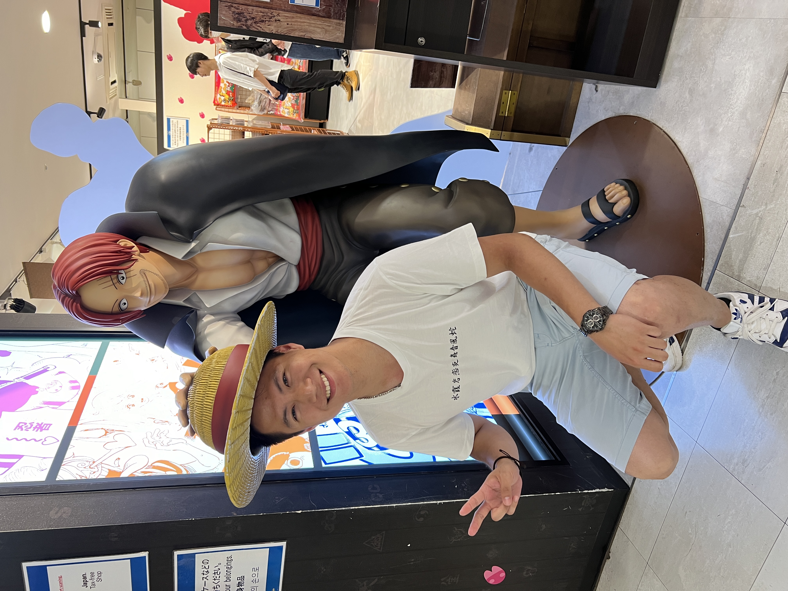
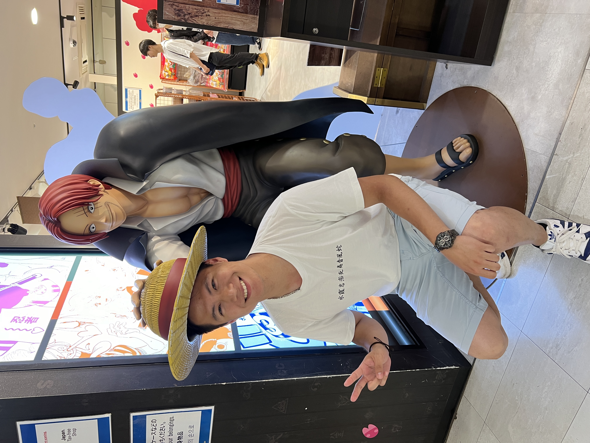
Adresse : 1 Chome-22-6 Jinnan, Shibuya City, Tokyo 150-0041, Japon
12. Animate (Ikebukuro)
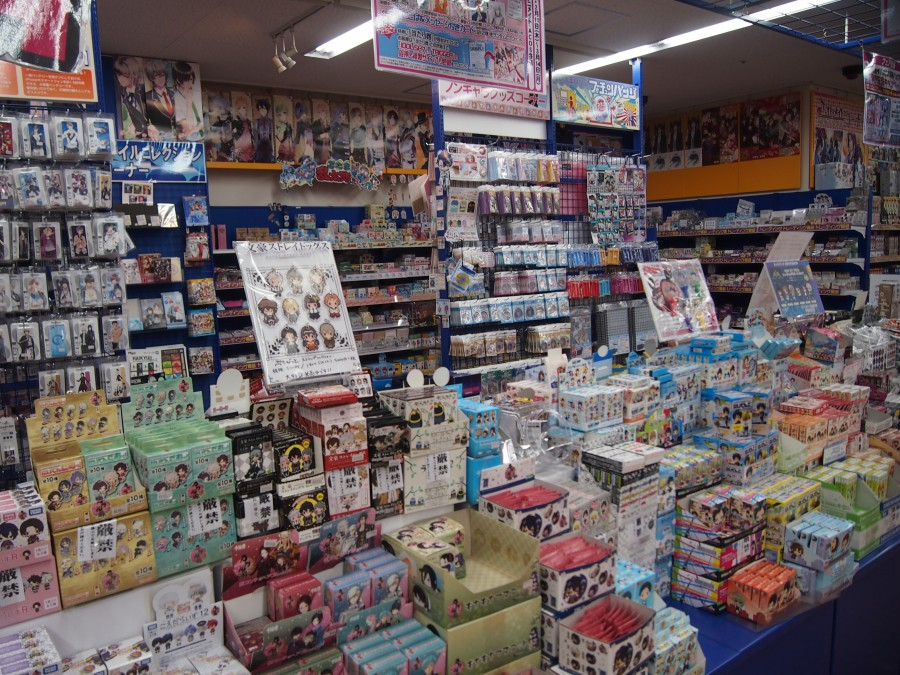Un des plus grands magasins d’anime au monde, il y a 10 étages en tout ! Spy x family, Jujutsu Kaisen, Chainsaw man, Oshi no ko, Naruto, Ghibli, Pokémon, Harry Potter… Bref, il y a la tonne de goodies différents, vous trouverez sûrement des choses qui vous plairont !
Adresse : 1 Chome-20-7 Higashikebukuro, Toshima City, Tokyo 170-0013, Japon
13. Menyahh (Ramen HH)

C’est le restaurant de ramen dont le chef cuisinier a fait une vidéo avec Louis-san, un youtubeur faisant des vidéos sur le Japon pour ceux qui ne le connaissent pas. Parmi tous les restaurants de ramen que j’ai pu goûter au Japon, qui sont tous bons d’ailleurs, c’est le seul restaurant de ramen que je n’ai jamais vu donner des portions de porc aussi grandes !
Je ne rigole pas, c’est vraiment énorme, il existe même une portion XL, le bol est super grand avec deux fois plus de viandes ! Sur la photo ci-dessous, j’ai un ami qui a pris cette portion (le bol en bas à droite), il a eu beaucoup de mal à le manger malgré le gros mangeur qu’il est, assurez-vous d’avoir suffisamment faim avant de prendre la portion XL ! Mon conseil en vrai, ne prenez pas la portion XL, juste une portion normale suffira même s’il est effectivement très bon car vous devez réserver un peu de place pour manger d’autres choses succulentes dans la journée !
Le beau goss absolu... je ne parle pas du mec à gauche
Adresse : Japon, 〒134-0088 Tokyo, Edogawa City, Nishikasai, 5 Chome−5−13 1F
14. Batting centers
On a quasiment tous déjà vu dans les animes des battings centers dans les animes, en voici un dans la vraie vie au Japon dans l’arrondissement de Shinjuku. Pour seulement 300 yens (1.90€ environ) vous pourrez avoir 25 lancers mais attention pour tous les débutants (comme moi) ce n’est pas si simple.
Si vous n’avez jamais fait de baseball, figurez-vous que les lancers de balle sont très rapides, il y a différentes salles de lancers de balles avec le km/h indiqué à l’entrée. La vitesse la plus basse est de 70 km/h que je recommande fortement pour les débutants ayant jamais fait ce sport car sur les 25 lancers vous avez probablement beaucoup de chance d’en louper plus de la moitié ! Pour les plus expérimentés, il existe des salles avec des lancers allant à 130 km/h ! Plusieurs types de battes sont mis à disposition, des battes légères, lourdes, pour femmes (oui oui, ce sont des battes roses) …
Ah oui, et n’oubliez surtout pas de ramener du cash sur vous, pour débuter une partie, il y a des machines où il faut insérer des pièces pour pouvoir y jouer, autrement ils n’acceptent pas la carte bancaire ! Pour ceux qui ont des billets, à l’entrée du batting center se trouve une machine d’échange de billets en pièces de yens.
Adresse : 2 Chome-21-13 Kabukicho, Shinjuku City, Tokyo 160-0021, Japon
Horaires : 10:00-04:00
15. Mipig cafe
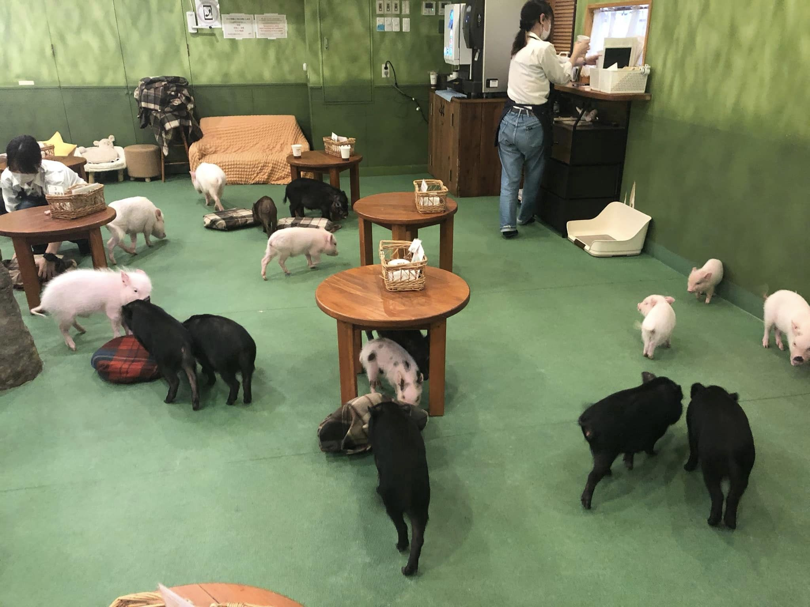Sans doute l’un des endroits où j’ai le plus adoré en l’espace de 30 min seulement ! Je vous présente le café Mipig en l’occurrence celui de Harajuku où je suis allé. Pour 2200 yens (environ 13.5€) vous pourrez passer 30 min dans ce café en compagnie de petits cochons qui viennent tout seul sur vos jambes pour dormir, kawaii n’est-ce pas ?
Vous aurez aussi pour ce prix des boissons à volonté comme du thé lipton, jus d’orange, pepsi, etc. Je vous conseille de prendre vos boissons en début de séance avant de vous asseoir car une fois que le cochon s’assoit sur vos jambes, vous allez avoir du mal à vous lever de peur de les déranger.
N’oubliez pas, comme de nombreuses activités au Japon qui sont prisées des touristes, il faut réserver le créneau sur leur site et pas besoin de payer en avance il suffit juste de vous inscrire avec votre mail ! Voici le lien pour réserver aux différents Mipig cafe : https://mipig.cafe/
Je vous conseille de regarder les différentes adresses pour les mipig cafe. En effet, chaque mipig café est différent et possède leur propre décor ! Je vous donne l’adresse du café où je suis allé ci-dessous :
Adresse du café : Japon, 〒150-0001 Tokyo, Shibuya City, Jingumae, 1 Chome−15−4 Barbizon76 1階
16. Les lieux de Your name
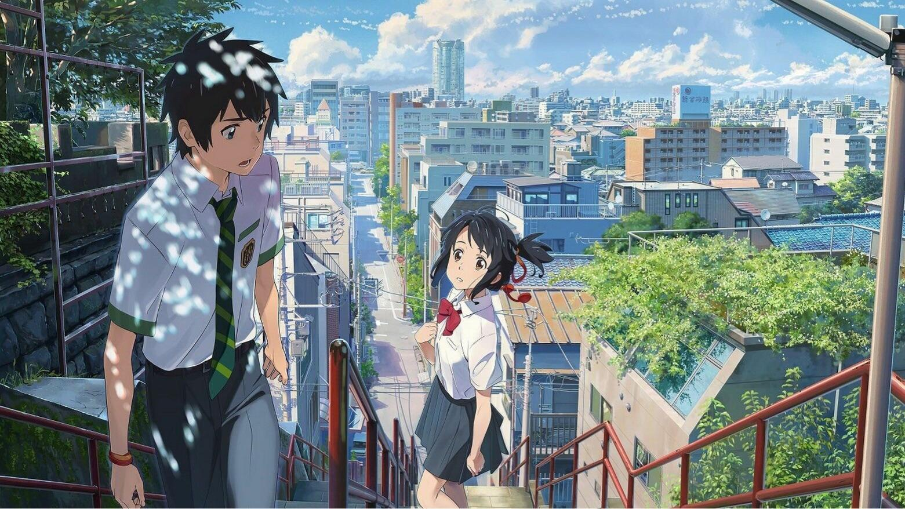Tous les fans de Your Name (ou Kimi no na wa pour les experts) ont déjà pensé à visiter les lieux emblématiques du film au Japon hé hé…

Voici un site qui référencie tous les lieux du film : https://voyapon.com/fr/your-name-film-lieux-japon/
J’ai pour ma part visité les fameux escaliers qui mènent au sanctuaire Suga, on est arrivé vers 8h40 et c’était plutôt calme, il y avait 2 touristes seulement avant nous donc ça n’a pas l’air très bondé.
Oui, un jour je reviendrai avec mon âme sœur, je le promets.
Adresse des escaliers : 5-6 Sugacho, Shinjuku City, Tokyo 160-0018, Japon. Ou tapez Suga shrine 😊
17. Radio Kaikan
La fameuse tour de 10 étages et qui a été représenté dans le célèbre anime Steins Gate dans le très connu arrondissement d’Akihabara. Pour tout fan d’animes, vous allez retrouver pour le plus grand plaisir de vos pupilles dans ce building de 10 étages pleins de stores qui vendent des produits/ goodies de tout animes confondus et il y a également magasins qui vendent des cartes Pokemon, One Piece, Yu-Gi-Oh, etc...

Et la partie principale : si vous prévoyez d’acheter une figurine au Japon, c’est ici que vous aurez le plus de chance de trouver ceux qui vous plaisent mais aux alentours de ce bâtiments il y a d’autres magasins spécialisés dans la vente de figurines que je vous conseille de visiter d’abord. En effet, il faut savoir que les prix des figurines au Japon ne sont pas fixes, tout comme les cartes de jeux pokémon, One Piece, etc qui sont vendus à un prix différent à l’unité et de même pour les displays de jeux de cartes donc il faut faire très attention !
C’est pour cela que je vous conseille très fortement de faire un tour des boutiques dans un premier lieu afin de faire un repérage et noter les prix d’un côté pour ensuite faire un comparatif du meilleur prix et enfin d’acheter votre figurine ! Par exemple, je voulais acheter une figurine de Luffy Gear 5 de One Piece (voir photo ci-dessous) et pour la même figurine je pouvais en trouver à plus de 2500 yens de différence ce qui fait plus de 15€ d’écart ! En plus de cela, vous pouvez chez certains vendeurs appliquer la Tax free ce qui peut vous permettre d’économiser davantage votre argent !
2500 yens de différences sur les deux figurines One Piece soit 15€ d'écart !
Adresse : 1-chōme-15-16 Sotokanda, Chiyoda City, Tokyo 101-0021, Japon
18. Roast Beef Ohno
Une des nombreuses spécialités du Japon à absolument goûter ! Je vous présente le Roast beef Ohno qui est composé de riz enroulé d’un bœuf wagyu avec par-dessus un jaune d’œuf et une sauce blanche absolument délicieuse ! Je vous laisse en juger par les photos que j’ai prises ha ha.
Pour les menus, vous avez soit la possibilité de prendre un Roast beef composé d’un bœuf Wagyu dans le menu Rich ou sinon un simple bœuf normal pour moins cher si vous êtes limités en budget avec le menu Healthy. Pour ma part, j’ai voulu n’avoir aucun regret au Japon, j’ai donc pris un menu Rich en taille L (car j’avais faim…) et c’était excellement excellent pour 2750 yens (17€ environ et ce n’est pas cher pour du bœuf Wagyu !)
Il y a 3 adresses disponibles à Tokyo : Roast Beef Ohno Harajuku (celui où je suis allé et où il y avait le plus d’avis sur Google Maps), Roast Beef Ōno Akihabara et Roast Beef Ohno Minami Ikebukuro.
Adresse : Adresse : Japon, 〒150-0001 Tokyo, Shibuya, Jingumae, 4 Chome−31−10 YMスクウェア原宿 地下1階
19. Chao Chao Gyoza Yurakucho
Un des meilleurs restaurants de gyoza selon nous ! Des gyozas au bœuf, poulet, fromage, crevettes, à la vapeur, vous en avez vraiment pour tous les goûts. Mais attention, pour la millième fois, c’est un restaurant qui n’accepte uniquement le cash et ne prend pas la carte bancaire…
De plus, il se peut très fortement qu’il y ait une queue car ce restaurant est très prisé des japonais. Je vous mets ci-dessous la carte des menus :

Le petit menu 😊
20. Shin Okubo
C’est LE quartier coréen pour tous les fans de Corée (sauf moi…) dans l’arrondissement de Shinjuku. Bon, je vous avoue j’y étais déjà allé pendant moins d’une semaine il y a de cela 7 ans, je n’écoute pas vraiment de la kpop et je n’utilise pas de skincare, euhhhhh, je ne suis pas intéressé à part la nourriture que je dois avouer, est très bonne !
Vous trouverez tout ce que vous aimez ici, en passant par la bouffe, les photos booth, les goodies en rapport avec la kpop, bref, c’est une immersion en Corée dans le Japon (MAIS MOI JE SUIS VENU AU JAPON POUR DES ACTIVITES 100 NIPPONNES *BIIIP*, tout le reste est censuré en raison des propos haineux de l’auteur). Non, c’est faux, j’aime la Corée (du Sud of course).
21. Namchini82 café
Café situé dans le quartier coréen Okubo à Tokyo, il a connu un petit succès sur les réseaux sociaux notamment grâce à son célèbre gelée ou flan en forme de chien tout fluffy et qui gigote dans tous les sens.
Personnellement, pour y avoir goûté je trouve que le flan au coco n’a rien d’exceptionnel niveau goût mis à part son esthétique kawaii mais en plus de cela l’enseigne vous oblige à prendre une boisson en plus, ne serait-ce une technique déloyale pour se faire plus d’argent ? Je vous laisse en juger par vous-même. Si vous souhaitez goûter des bonnes choses qui ont du goût je vous conseille de passer le tour pour cette fois-ci car vous avez pleins d’autres choses de bons à Tokyo !
Adresse : Japon, 〒169-0072 Tokyo, Shinjuku City, Okubo, 1 Chome−16−22 B1
22. Shibuya Scramble Crossing
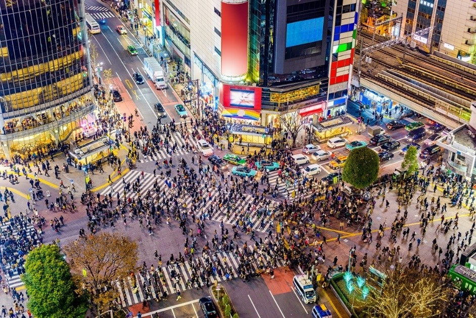Croisement emblématique de Shibuya à Tokyo, tout le monde a déjà vu quelque part ce célèbre carrefour où tous les piétons se croisent. Si vous restez un peu, vous aurez sûrement la chance de voir des personnes conduire en kart sur la route !
Si vous avez prévu de voir la statue Hachiko ou la Magnet Tower, vous passerez certainement par là car c’est juste à côté ! De plus, le Shibuya scramble crossing possède un charme différent de jour comme de nuit, je vous conseille donc si vous en avez l’occasion d’aller admirer ce magnifique croisement autour d’un bon frappuccino à la vanille de Starbucks.
23. Starbucks Coffee – Shibuya Tsutaya
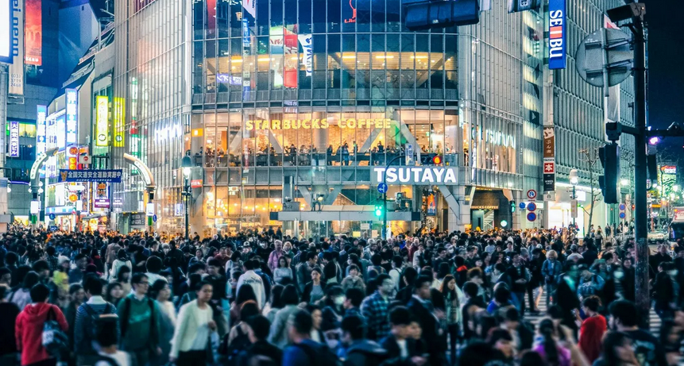C’est LE Starbucks le plus connu du Japon (pour les touristes en tout cas) qui donne une vue incroyable sur le Shibuya scramble crossing. Bien évidemment, pour y avoir accès, il faut commander une petite boisson pour avoir le droit d’aller au premier étage où on peut contempler le superbe croisement de Shibuya tranquillement.
Cela vaut vraiment le coup, les boissons sont vraiment moins chères que ce qu’on peut en trouver en France mais préparez-vous à ce qu’il y ait du monde à l’un des spots les plus célèbres de Tokyo !
Adresse : Japon, 〒150-0042 Tokyo, Shibuya, Udagawacho, 5 Chome−1−21 6QFRONT 2F
24. Art Aquarium Museum
Un des aquariums les plus connus de Tokyo situé dans le quartier de Ginza, ce n’est pas un aquarium comme les autres : ils mettent ici en avant plus la beauté des aquariums/bocaux que des poissons, principalement d’eau douce comme les poissons rouges. C’est plus un musée d’art pour le plaisir des yeux qu’un vrai aquarium qui nous montre tous types de poissons, ce qui le rend très spécial et unique !
Cependant, l’aquarium est très petit, la visite peut se faire rapidement en 30-40 minutes. Pour accéder à l’aquarium, ce n’est pas évident à première vue, il vous faudra passer par le centre commercial Mitsukoshi et aller au dernier étage. L’entrée coûte 2300 yens, soit environ 14€.
Adresse : Japon, 〒104-8212 Tokyo, Chuo City, Ginza, 4 Chome−6−16 9階入場口 三越新館 9階
25. Mega Donquijote Shibuya
C’est le plus grand Donquijote du Japon ! Il est très conseillé de venir par là avant de faire d’autres magasins pour les bons plans. C’est un magasin sur 9 étages où on retrouve des produits de beauté, de la nourriture, des vêtements, des goodies, même des choses un peu olé olé, il y a vraiment tout et n’importe quoi.
Prévoyez vraiment 1h30-2h au moins pour vos courses car c’est réellement très grand et il y a beaucoup de monde à l’intérieur, c’est donc difficile de s’y déplacer. Avec les konbinis, c’est l’une des très rares enseignes à être ouverte 24h/24h, donc vous pouvez y aller à n’importe quel moment de la journée.
De plus, on peut se faire enlever la TVA, il suffit d’aller au comptoir « Tax free » au dernier étage avec vos achats et votre passeport, c’est super pratique pour les étrangers !
Je vous donne le plan du Donquijote ci-dessous même si tout est en japonais ha ha (vous pouvez traduire à l’aide de l’appareil photo de Google trad).
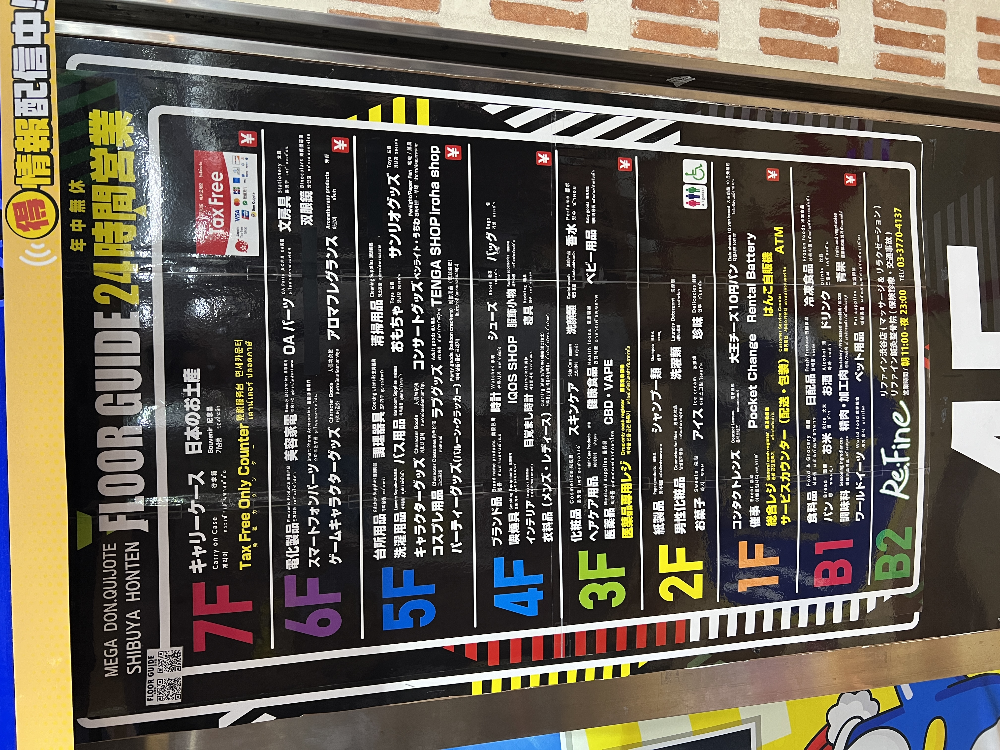Adresse : 28-6 Udagawacho, Shibuya, Tokyo 150-0042, Japon
26. Plus grand Uniqlo au monde
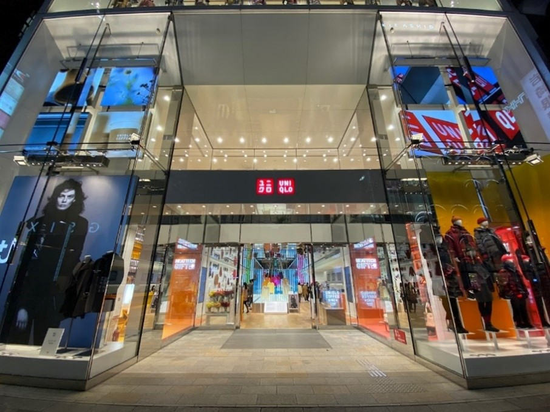Encore un truc « le plus grand du Japon » : je vous présente le plus grand Uniqlo au monde avec plus de 12 étages. Des vêtements en collaboration avec d’autres manga/animes ou séries connus telles que Snoopy (au moment où je suis allé) se trouvent au 11e étage dans la partie collaboration avec UT ! Les t-shirts sont moins chers qu’en France : un t-shirt en France équivaut à 19.90€ alors qu’au Japon c’est 1800 yens soit environ 11€.
Il y a énormément d’expositions vitrées (un peu à la manière des œuvres d’art) et une exposition « high tech » à l’entrée. Il y aurait même un café au sommet, mais nous n’avons pas eu le temps d’y aller. Je vous mets également le plan du Uniqlo ci-contre.
Adresse : Japon, 〒104-0061 Tokyo, Chuo City, Ginza, 6 Chome−9−5 ギンザコマツ東館 1－12F
27. GU
De la même façon que Uniqlo, GU est une marque de mode des plus populaires au Japon, avec des petits prix. Leur qualité équivaut à Uniqlo, sauf que l’enseigne ne s’est pas exportée à l’international. Cependant, il reste tout de même très intéressant de passer faire un tour et regarder s’il y a potentiellement des articles qui vous plaisent.
Je vous avoue que je n’ai pas visité GU car j’étais plus intéressé par Uniqlo, mais d’après les amis avec qui j’ai voyagé, ils recommandent très fortement ce magasin pour tout fan de vêtement/mode !
28. Shinjuku Gyoen National Garden
Le jardin impérial de Shinjuku est un parc dans les arrondissements de Shinjuku et de Shibuya à Tokyo. Le parc a été une résidence de la famille Naito à la fin du XIXᵉ siècle pendant l'ère Edo avant de devenir un jardin sous la gestion de l'Agence impériale du Japon. Bref, on est rentré vite fait à l’intérieur mais je vous recommande vivement d’y aller en pleine période de Sakura, c’est à ce moment que le parc rayonne !
Quand j’étais allé en mai, je m’attendais à voir les cerisiers mais c’était déjà trop tard, je vous recommande d’y aller plus tôt si vous comptez vous les sakuras qui sont, je l’espère, majestueusement magnifique ! Ah, oui, j’ai oublié de le dire, quand on était allé, l’entrée du parc était gratuite mais apparemment il y a des périodes où c’est payant (photo à l’appui ci-contre) !
Adresse : 11 Naitomachi, Shinjuku City, Tokyo 160-0014, Japon
29. Sanctuaire Asakusa
C’est sans doute l’un des sanctuaires les plus iconiques de Tokyo, du fait de sa beauté et son architecture. Vous le reconnaîtrez surtout grâce à sa très grosse lanterne rouge qui est juste magnifique !
Normalement, le sanctuaire est très bondé mais je suis arrivé très tôt le matin à 8h11 et surtout à un jour de pluie, ce qui fait qu’il y avait peu de monde. Je suis resté à peine une trentaine de minutes et quand je suis parti il commençait à y avoir un peu de monde. C’est un lieu à ne pas manquer même pour une courte visite.
Regardez la force de cet homme qui arrive à soulever la lanterne par la propre force de ses mains !
Adresse : 2 Chome-3-1 Asakusa, Taito City, Tokyo 111-0032, Japon
30. Cafe Capyba
Pour les fans de capybaras, voici le café Capyba situé dans le quartier de Sumida. Il est conseillé de réserver en avance l’entrée sur leur site : https://cspace.co.jp/.
Apparemment, il est très fortement recommandé de le faire 2 semaines à l’avance à cause du succès du café, chose qu’on ne savait pas… Fort heureusement, on a eu la chance de pouvoir réserver le matin même à la suite d’un créneau qui s’est libéré, on a donc eu le temps de faire un peu de shopping avant d’y retourner quelques heures plus tard !
Et bien sûr, vous payez les frais d’entrée qui sont de la modique somme de 1250 yens (environ 7,80€) pour 30 min qui suffit largement.
Mais attention ! La plus grosse douille selon moi, c’est qu’en plus des frais d’entrée, vous êtes obligés de prendre une boisson CHACUN et si vous voulez nourrir les capybaras il faut également acheter la nourriture (330 yens) !
Vu le super (radin) ingénieur que je suis, j’ai pris la boisson la moins chère, c’est-à-dire un petit jus de pomme à 550 yens. Au total, attendez-vous à payer au minimum 2130 yens pour toute l’activité, soit environ 13€ !
D’un point de vue personnel, je préfère 10 fois plus le Mipig café où ne payait que seulement les frais d’entrée et les boissons étaient à volonté !
Un autre souci que je tiens à souligner, j’ai l’impression que les capybaras sont en surpoids et ne bougent pas beaucoup à cause de leur suralimentation (c’est mon hypothèse) et ce qui rend l’expérience moins fun par rapport au Mipig café où les petits cochons étaient gigas actifs !
Adresse : 1 Chome-31-3 Higashimukojima, Sumida City, Tokyo 131-0032, Japon
31. Nakano Broadway
Si tu es fan de mangas, d’anime ou de goodies rétro, Nakano Broadway est un vrai paradis à Tokyo. Ce centre commercial couvert regroupe plusieurs étages de petites boutiques spécialisées : figurines, cartes à collectionner, jeux vidéo rétro, vêtements cosplay, et même des objets collector introuvables ailleurs.
Je suis personnellement allé là-bas pour les figurines et les cartes à jouer Pokemon et One Piece et je n’ai vraiment pas regretté !
En effet, venez d’abord absolument à Nakano Broadway pour en acheter avant d’aller à Akihabara (dans la Radio Kaikan par exemple) car les prix ici sont vraiment moins chers que les prix à Akihabara. Par exemple, j’ai acheté ici un display de cartes Pokemon White Flare et Black Bolt pour 11800 yens (environ 73€) alors qu’à Akihabara le prix des displays variait de 14 000 (87€) à 23 000 yens (143€), donc les prix à Nakano Broadway sont vraiment non négligeables !
Quant aux figurines, c’est le même principe, vous pouvez trouvez des figurines de superbe qualité pour à peine quelques dizaines d’euros, de quoi bien remplir rapidement vos valises… Je vous conseille d’aller à la Radio Kaikan situé à Akihabara que si et seulement si vous ne trouvez pas ce que vous voulez à Nakano Broadway.
L’ambiance est unique : étroites allées remplies de trésors, boutiques parfois un peu anciennes, mais avec un charme fou. C’est le genre d’endroit où tu peux facilement passer des heures à fouiller et à tomber sur des perles rares. Les prix varient beaucoup, donc que tu veuilles juste jeter un œil ou craquer pour une figurine collector, il y en a pour tous les goûts.
Adresse : 5 Chome-52-15 Nakano, Nakano City, Tokyo 164-0001, Japon
32. Cafe BingGo
Si tu es fan de desserts coréens et que tu te trouves à Tokyo, ne manque pas le Café BingGo ! Situé à Shin-Okubo, le quartier coréen de la ville, ce café est un véritable incontournable pour les amateurs de douceurs sucrées.
Leur spécialité ? Le bingsu, un dessert glacé coréen composé de glace pilée nappée de lait condensé, de fruits frais, de pâte de riz et parfois de glace ou de crème chantilly. Les saveurs varient selon les saisons, avec des options comme la mangue, la pêche, le kinako (farine de soja grillée) ou encore l’Oreo. Les portions sont (très) généreuses, idéales à partager, et les prix oscillent entre 900 et 1 500 ¥.
Outre le bingsu, le café propose également des gaufres garnies de fruits frais, de crème ou de chocolat, des patates douces grillées et une variété de boissons comme des lattes, des milkshakes et des thés au lait.
En revanche, de souvenir, je crois qu’il faut que vous commandiez autant d’articles au minimum qu’il y a de personnes. C’est-à-dire que si on est 4 personnes à manger au Café BingGo, il faut commander 4 articles au minimum (pâtisseries ou boissons aussi !)
L’intérieur du café est moderne et lumineux, avec une décoration aux tons jaunes et une ambiance chaleureuse. C’est un endroit parfait pour faire une pause sucrée après une journée de visites ou pour se détendre entre amis.
Adresse : TRN building 2F, 3F, 2 Chome-2-3 Hyakunincho, Shinjuku City, Tokyo 169-0073, Japon
33. The Seiko Museum
Si tu es passionné par l’histoire de l’horlogerie ou simplement curieux de découvrir l’évolution du temps au Japon, le Seiko Museum Ginza est une étape incontournable. Situé dans le quartier chic de Ginza près de Muji ou encore d’Uniqlo, ce musée gratuit te plonge dans l’univers fascinant des montres japonaises.
Tu y trouveras :
- Une collection impressionnante de montres Seiko, des premières mécaniques aux modèles les plus récents.
- Des horloges historiques, dont des pièces rares illustrant l’évolution de la mesure du temps au Japon.
- Des expositions interactives et des écrans numériques pour comprendre les innovations technologiques de la marque.
Petit conseil : tu as la possibilité d’obtenir un petit pin Seiko si tu remplis leur questionnaire de satisfaction via Google Forms et que tu le montres à une des hôtesses à l’accueil !
Adresse : 4-3-13 Ginza, Chūō-ku, Tokyo 104-0061
34. Meiji-jingu

Le Meiji-jingu est l’un des sanctuaires shintos les plus célèbres du Japon, dédié à l’empereur Meiji et à son épouse Shōken. Situé juste à côté de l’effervescence de Harajuku et de Shibuya, il offre un contraste saisissant : en quelques pas, on passe de l’agitation urbaine à une forêt sacrée paisible, avec plus de 100 000 arbres.
L’entrée se fait par de gigantesques toriis en bois, puis un long chemin bordé de nature mène jusqu’au sanctuaire principal. L’endroit est particulièrement prisé pour les cérémonies traditionnelles (mariages shinto) et pour les grands événements comme le Nouvel An, où des millions de visiteurs viennent prier.
Même sans connaître le shintoïsme, la balade vaut le détour : l’atmosphère est solennelle et apaisante, et on peut essayer les rituels simples comme la purification à l’eau ou l’achat d’un ema (plaque en bois pour écrire un vœu).
Adresse : 1-1 Yoyogikamizonocho, Shibuya, Tokyo 151-8557, Japon
35. Cas:Pace
Si tu veux faire une pause shopping trendy et visuelle dans Harajuku, fonce chez cas:pace Tokyo ! Dans cette boutique tu peux trouver de toutes sortes de coques de téléphones avec des designs uniques et super stylés ! Tu peux également trouver des coques pour Airpods qui sont tout aussi géniales ou même des batteries externes. Les prix sont raisonnables, pour la qualité des coques je peux comprendre le montant qu’ils proposent, comptez environ une vingtaine d’euros pour leurs produits !
De plus, si vous portez un vêtement de couleur bleu, vous aurez une petite surprise de leur part ! Et bien évidemment cette boutique accepte la Tax Free. J’ai pris personnellement une coque d’Iphone avec un petit nounours dans un onsen super mignon et compatible MagSafe !
À l’intérieur, le décor est minimaliste mais percutant. C’est plus qu’un magasin, c’est un vrai moment “wow” créatif, parfait pour s’inspirer ou choisir une coque originale à ramener en souvenir. Personnellement, depuis que j’ai cette coque tous mes amis me font la remarque « wow trop bien ! Où l’as-tu acheté ? », ce n’est bien sûr pas pour flex (un peu quand même) mais leurs coques sont vraiment belles ! Ils utilisent la technologie IMD (In-mond) haut de gamme : les motifs sont encapsulés dans la coque, pas juste imprimés à la surface — donc ni décoloration, ni usure prématurée ce qui lui donne une grande espérance de vie !
Attention, Je vous conseille uniquement d’aller dans cette boutique si vous possédez des appareils Apple car tous leurs produits sont destinés pour les appareils Apple !
Voici un aperçu de leurs produits sur leur site internet : https://en.cas-space.com/
Adresse : Japon, 〒150-0001 Tokyo, Shibuya, Jingūmae, 3-chōme−24−3 桑原ビル 1階B
36. Mugiwara Store Harajuku
Si tu veux plonger dans l’univers de One Piece, le Mugiwara Store Harajuku est un arrêt indispensable à Tokyo. Inauguré le 23 août 2024, il s'est vite imposé comme un lieu incontournable pour les fans et pas seulement pour le shopping ! En effet, de tous les Mugiwara Store que j’ai faits, celui-ci est celui qui se démarque le plus par son décor spécial ou par ses goodies EXCLUSIFS à la boutique ! Tu peux même poser avec une statue grandeur nature de Luffy en Gear 5 !
Tu trouveras une belle sélection de produits en édition exclusifs Harajuku, comme des T-shirts limités, sacs inspirés du chapeau de paille de Luffy, papeterie stylée, macaron One Piece, merchandising spécial Harajuku Chopper et Sanji no Oyatsu. Ce lieu est assez centré sur ces deux personnages de Chopper et Sanji, j’ai acheté une paire de baguettes Sanji personnellement et je l’utilise encore aujourd’hui pour manger mes plats ! J’ai aussi acheté une figurine Nyan Piece (regardez sur internet à quoi ils ressemblent, c’est trop mimi !).
Et mon plus gros achat dans cette boutique est une montre One Piece x Seiko en édition limitée à environ 300€ alors que cela faisait longtemps que je la recherchais en France mais elle était soit en rupture de stock ou soit introuvable ou sinon la plupart des gens la revendait au minimum à 500€ et plus. Donc j’ai directement sauté par-dessus dès que j’ai vu la montre ha ha.
Adresse : Japon, 〒150-0001 Tokyo, Shibuya, Jingumae, 6 Chome−31−21 東急プラザ原宿「ハラカド」 G階
37. Shibuya Sky
Si tu veux avoir une vue 360° sur Tokyo, avec en bonus l'immersion directe dans le tumulte de Shibuya, Shibuya Sky est une balade urbaine à ne surtout pas manquer. Perché au sommet de la tour Shibuya Scramble Square, à environ 230 mètres d’altitude, c’est le plus haut observatoire à ciel ouvert de Tokyo.
Pourquoi y aller ?
- Vue immersive sans vitre entre toi et le paysage : tours, croisement de Shibuya, Tokyo Tower, Skytree, et même le Mont Fuji si le ciel est dégagé.
- Des zones stylées et originales :
- Sky Edge : un coin circulaire parfait pour des photos impressionnantes.
- Pelouse synthétique, transats suspendus & couloir cosy pour admirer le paysage zen et urbain.
- Sky Bar "The Roof" : un rooftop-bar aux airs de lounge, ouvert d’avril à début décembre, parfait pour siroter un verre en haut de Tokyo.
Concernant la réservation du Shibuya Sky, c’est un véritable enfer. Les réservations ne se font que 2 semaines à l’avance et les billets d’entrée à partir de 15 heures jusqu’à la fermeture partent extrêmement vite, surtout pour profiter du coucher de soleil ou de la vue nocturne.
👉 Astuce : Les billets sont mis en ligne à minuit heure japonaise. Depuis la France, ça correspond à 17h pétantes ! Connecte-toi quelques minutes avant pour être sûr d’avoir une place.
J’ai personnellement réservé via Klook mais c’est aussi faisable sur leur site officiel.
Concernant les prix, pour une visite classique avant 15 heures, il faudra payer 2700 yens (17€). Pour les billets après 15 heures, le tarif est de 3400 yens (22€).
Bien que ce soit plutôt bondé et difficile d’accès, je recommande vivement l’expérience : la vue est à couper le souffle !
Petit tips : À la sortie du Shibuya Sky, un QR code permet de répondre à un questionnaire de satisfaction. En échange, tu peux récupérer un autocollant exclusif dans une machine à gashapon 🎁.
Site officiel pour la réservation : Lien vers Shibuya Sky
Adresse : Japon, 〒150-6145 Tokyo, Shibuya, 2 Chome−24−12 スクランブルスクエア 14階・45階 46階・屋上
38. Gentle Monster

Gentle Monster, c’est bien plus qu’une marque de lunettes de soleil ou de vue : chaque boutique est une véritable installation artistique. Originaire de Corée du Sud, la marque s’est implantée au Japon avec des magasins qui attirent autant les amateurs de mode que les curieux en quête d’expériences visuelles.
À Tokyo, tu trouveras un flagship futuriste à Aoyama, avec des sculptures cinétiques et une scénographie qui change selon les saisons. Plus récemment, un deuxième magasin a ouvert à Ginza, tout aussi impressionnant, avec des installations géantes et la possibilité de personnaliser ses verres. À Osaka, Gentle Monster a aussi un espace au grand magasin Hankyu Umeda, plus compact mais toujours spectaculaire.
Chaque boutique est pensée comme une expo d’art contemporain : tu déambules au milieu de créatures étranges, de machines en mouvement et de décors qui semblent tout droit sortis d’un rêve. Ensuite seulement… tu découvres les lunettes.
Je ne connaissais pas cette boutique avant que ma sœur et ma mère m’en parlent mais de ce que j’ai pu voir, les lunettes ont effectivement un design à part. Personnellement, ce ne sont pas des lunettes de soleil qui matchent avec mes goûts mais elles donnent vraiment un style particulier à celle ou celui qui les porte. Les prix oscillent entre 25 000 yens et 37 000 yens : il faut donc prévoir entre 150€ et plus de 300€ pour se procurer une paire. Et bien sûr, la Tax Free est appliquée à leurs produits (pense à ton passeport !). Ils proposent également une garantie, mais inutile de la prendre si tu n’habites pas au Japon et que tu repars rapidement.
Site de Gentle Monster Tokyo : Lien vers Gentle Monster
Adresse : 1F~2F, ジェントルモンスター東京青山フラッグシップストア, 5 Chome-3-2 Minamiaoyama, Minato City, Tokyo 107-0062, Japon
39. Pomme’s Omurice
C’est LE meilleur restaurant d’omurice que j’ai mangé jusqu’à présent ! Ils ont énormément de variétés d’omurice et avec des sauces différentes (tomate, curry, crème…).
Pour chaque plat qu’ils proposent, il y a différentes tailles d’omurice et là je peux vous dire que c’est vraiment généreux. Je suis de base un grand mangeur et la taille M c’était vraiment limite pour mon estomac. Pour les demoiselles, je vous conseille de prendre une taille S, vous ne regretterez pas de m’avoir écouté, je vous le promets !
Adresse : Japon, 〒150-0042 Tokyo, Shibuya, Udagawacho, 13−7 Koyas One, 2F
40. Shibuya 109
Impossible de manquer Shibuya 109 : tour ronde iconique de la mode tokyoïte, à côté du carrefour de Shibuya. Depuis les années 80, c’est le spot pour découvrir les tendances gyaru, kawaii et streetwear.
10 étages de boutiques : vêtements, accessoires, chaussures, cosmétiques. Ambiance dynamique, musique, affiches flashy, vendeurs stylés. Super spot pour shopping original ou cadeaux uniques.
Adresse : 2 Chome-29-1 Dogenzaka, Shibuya, Tokyo 150-0043, Japon